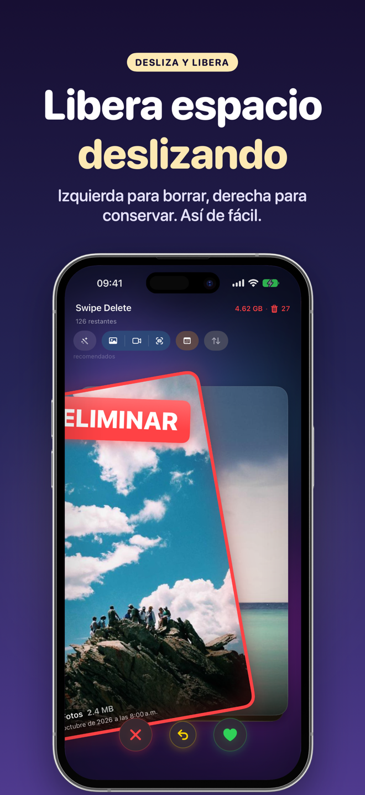
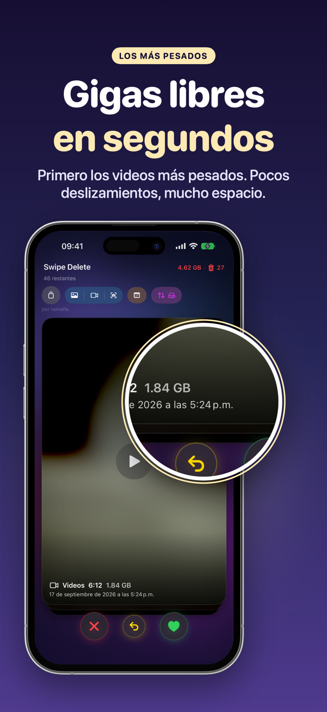
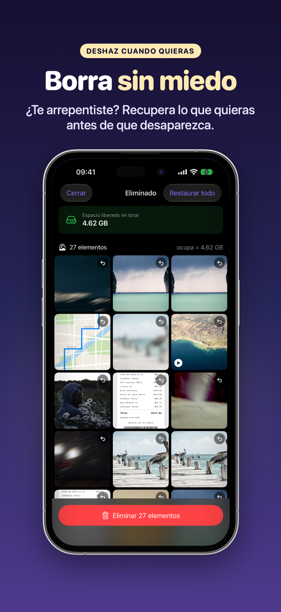
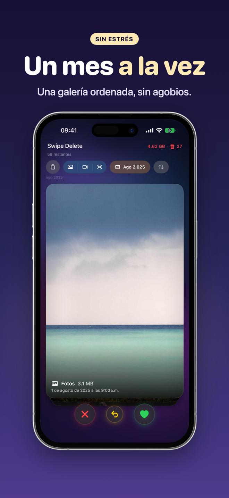
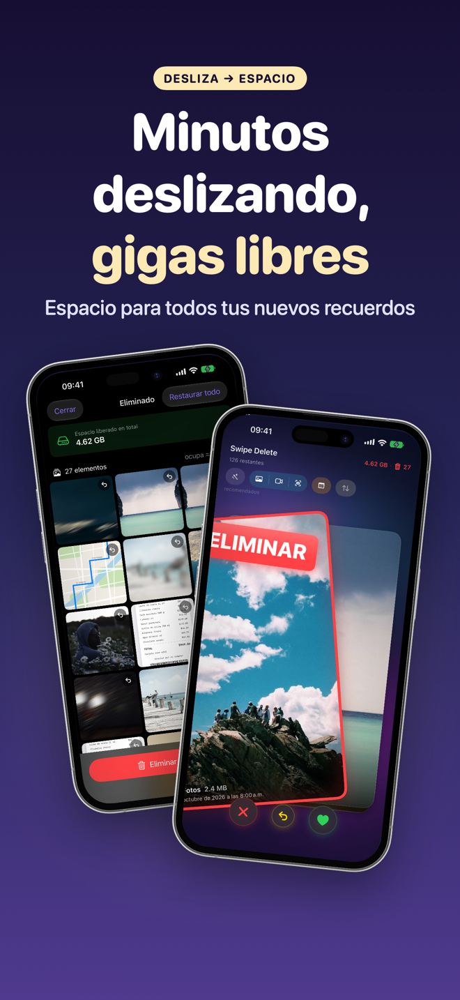

SwipeDelete · Borrar Fotos
Borra fotos deslizando y libera espacio en tu iPhone
¿Tu galería tiene miles de fotos que nunca vuelves a ver? Desliza a la derecha para guardar y a la izquierda para eliminar. En minutos recuperas GBs, sin esfuerzo y sin riesgo de perder nada importante.
Próximamente en elApp Store100% en tu dispositivo · Papelero de seguridad · Pago único, sin suscripción

Libera tu galería hoy
Sin revisar álbum por álbum. SwipeDelete te muestra primero lo más obvio y la última palabra siempre es tuya.
Próximamente en elApp Store- Inteligencia en tu dispositivoFotos similares, ráfagas, capturas de pantalla e imágenes de baja calidad, primero.
- Lo más pesado primeroOrdena por tamaño y recupera más espacio con menos gestos.
- Seguridad en cada pasoPapelero interno, deshacer al instante y confirmación de iOS.
- 100% privadoNingún dato sale de tu iPhone.
Limpiar tu galería se vuelve un juego
Desliza, decide, listo. Desliza para ver todas las pantallas →
Izquierda borra, derecha guarda 
Los videos más pesados primero 
Restaura cuando quieras 
Un mes a la vez 100% en tu dispositivo 
Minutos deslizando, GBs libres Un solo pago
Cómo funciona
Cuatro pasos y listo.
Permite el acceso a Fotos
Abre SwipeDelete y autoriza el acceso a tu librería. El análisis se queda en tu iPhone.
Elige por dónde empezar
Usa las sugerencias inteligentes, filtra por Fotos, Videos o Capturas, por año o mes, u ordena por tamaño.
Desliza y decide
Izquierda para borrar, derecha para guardar. ¿Te equivocaste? Deshaz con un toque.
Revisa y confirma
Revisa el Papelero en cuadrícula, restaura lo que quieras y confirma la eliminación.
Guías para liberar espacio
Guías prácticas, por ahora disponibles en inglés.
Cómo liberar espacio en iPhone
Guía en inglés.
Leer (EN) →Eliminar fotos duplicadas
Guía en inglés.
Leer (EN) →Borrar capturas de pantalla
Guía en inglés.
Leer (EN) →Borrar fotos borrosas
Guía en inglés.
Leer (EN) →Encontrar videos pesados
Guía en inglés.
Leer (EN) →Limpiar la galería
Guía en inglés.
Leer (EN) →Borrar muchas fotos a la vez
Guía en inglés.
Leer (EN) →Borrar fotos en ráfaga
Guía en inglés.
Leer (EN) →Preguntas frecuentes
¿Cómo borrar muchas fotos rápido en iPhone?
Con SwipeDelete deslizas fotos y videos como cartas: a la izquierda para borrar, a la derecha para guardar. Cada decisión toma un segundo y puedes deshacer la última cuando quieras. Más información (EN)
¿Puedo recuperar una foto que borré por error?
Sí. Todo lo que marcas va primero al Papelero interno, donde puedes restaurarlo uno por uno o en bloque. Nada se elimina hasta que lo confirmas, y iOS pide una confirmación adicional. Más información (EN)
¿SwipeDelete encuentra fotos duplicadas y capturas de pantalla?
Sí. El motor de sugerencias detecta en tu iPhone fotos similares, ráfagas sin seleccionar, capturas de pantalla e imágenes de baja calidad, y las pone al frente del mazo. Más información (EN)
¿Cómo libero más espacio en menos tiempo?
Ordena por tamaño: los archivos más pesados aparecen primero y recuperas más espacio con menos gestos. Más información (EN)
¿Mis fotos se suben a la nube?
No. Todo el análisis ocurre en tu dispositivo. Sin nube, sin servidores, sin cuenta. Política de privacidad (EN)
¿SwipeDelete es una suscripción?
No. Puedes liberar gratis hasta 300 MB; el desbloqueo ilimitado es un pago único de por vida en todos tus dispositivos Apple. Términos de uso (EN)
Desliza, decide, listo
Recupera tu espacio sin esfuerzo. SwipeDelete llega pronto al App Store.
Próximamente en elApp Store